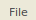
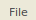

from sikuli import *
import sys
sys.path.insert(0, '/home/vagrant/linux_setup/sikuli/examples')
from test_helper import TestHelper
from Regionplus import Regionplus
# In a function so we can it to run from another test.
def close_box():
helper.Click( , "Cancel button not found", restart=True)
# path: should be the absolute path to the .fwbackup file.
# flex_is_open: True if Flex is already open, and we're opening
# the project via File > Project Management > Restore.
# False if we're just on Flex's opening screen.
def open_backup(path, flex_is_open):
# Opening: Get to the 'Restore a Project' screen
################
helper = TestHelper("open_flex_from_backup")
if flex_is_open:
helper.Click(Pattern().similar(0.90), "Couldn't find 'File'")
helper.Click(
, "Cancel button not found", restart=True)
# path: should be the absolute path to the .fwbackup file.
# flex_is_open: True if Flex is already open, and we're opening
# the project via File > Project Management > Restore.
# False if we're just on Flex's opening screen.
def open_backup(path, flex_is_open):
# Opening: Get to the 'Restore a Project' screen
################
helper = TestHelper("open_flex_from_backup")
if flex_is_open:
helper.Click(Pattern().similar(0.90), "Couldn't find 'File'")
helper.Click( ,
"Couldn't find 'Project Management' in File menu")
helper.Click(
,
"Couldn't find 'Project Management' in File menu")
helper.Click( , "Couldn't find 'Restore a Project...' option")
else:
# Not sure if this line is needed...
#subprocess.Popen("fieldworks-flex &")
helper.Click(Pattern(
, "Couldn't find 'Restore a Project...' option")
else:
# Not sure if this line is needed...
#subprocess.Popen("fieldworks-flex &")
helper.Click(Pattern( ).similar(0.89),
"Couldn't find 'Restore a project from a backup file...'")
# Goal: Find the backup
#################
if not helper.Click(Pattern(
).similar(0.89),
"Couldn't find 'Restore a project from a backup file...'")
# Goal: Find the backup
#################
if not helper.Click(Pattern( ).similar(0.80).targetOffset(-48,1), "Couldn't find 'Another location' option", give_up=False):
close_box()
if not helper.Click(Pattern(
).similar(0.80).targetOffset(-48,1), "Couldn't find 'Another location' option", give_up=False):
close_box()
if not helper.Click(Pattern( ).similar(0.90), "Couldn't find 'Browse...' button", give_up=False):
close_box()
helper.Click(
).similar(0.90), "Couldn't find 'Browse...' button", give_up=False):
close_box()
helper.Click( , "Couldn't find button to type a file name", restart=True)
paste(path)
helper.Type(Key.ENTER)
helper.Click(Pattern(
, "Couldn't find button to type a file name", restart=True)
paste(path)
helper.Type(Key.ENTER)
helper.Click(Pattern( ).similar(0.91), "Couldn't click 'OK'", restart=True)
if exists(Pattern(
).similar(0.91), "Couldn't click 'OK'", restart=True)
if exists(Pattern( ).similar(0.88)):
helper.Click(Pattern(
).similar(0.88)):
helper.Click(Pattern( ).similar(0.95), "Couldn't click 'Yes'", time=40, restart=True)
helper.write("Successfully opened project: " + path.split("/")[-1])
else:
helper.write("Successfully opened project: " + path.split("/")[-1])
wait(40)
).similar(0.95), "Couldn't click 'Yes'", time=40, restart=True)
helper.write("Successfully opened project: " + path.split("/")[-1])
else:
helper.write("Successfully opened project: " + path.split("/")[-1])
wait(40)